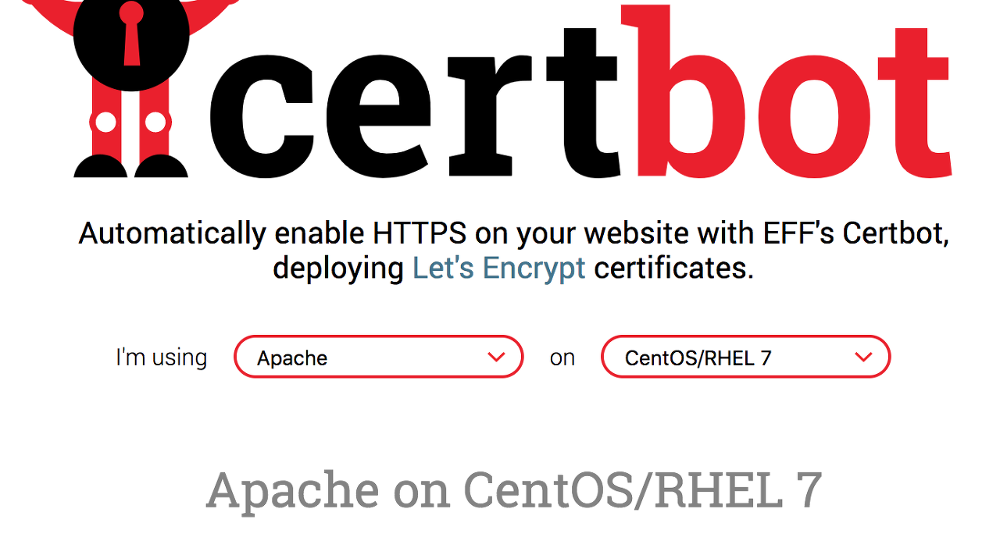
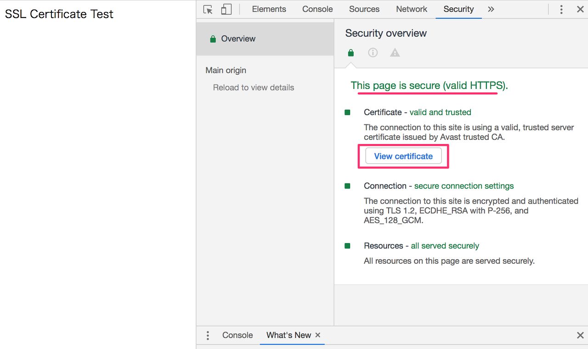

<!DOCTYPE html>
<html>
<head><meta name="generator" content="Hexo 3.8.0">
    <meta charset="utf-8">
    
    <title>Cent OS Let`s Encrypt SSL Install | J Dev</title>
    <meta name="viewport" content="width=device-width, initial-scale=1, maximum-scale=1">
    
        <meta name="keywords" content="linux,centos">
    
    <meta name="description" content="Let’s Encrypt 무료 SSL 인증서 발급Certbot이라는 툴을 사용하여 Let’s Encrypt의 SSL인증서를 발행하고, HTTP통신을 HTTPS로 암호화합니다. HTTP / HTTPS란?Hypertext Transfer Protocol(HTTP)는 인터넷상의 무수히 존재하는 웹사이트의 데이터를 송수신하는데 필요한 통신 프로토콜입니다.이 htt">
<meta name="keywords" content="linux,centos">
<meta property="og:type" content="article">
<meta property="og:title" content="Cent OS Let`s Encrypt SSL Install">
<meta property="og:url" content="http://woonyzzang.github.com/2019/11/05/cent-os-lets-encrypt-ssl-install/index.html">
<meta property="og:site_name" content="J Dev">
<meta property="og:description" content="Let’s Encrypt 무료 SSL 인증서 발급Certbot이라는 툴을 사용하여 Let’s Encrypt의 SSL인증서를 발행하고, HTTP통신을 HTTPS로 암호화합니다. HTTP / HTTPS란?Hypertext Transfer Protocol(HTTP)는 인터넷상의 무수히 존재하는 웹사이트의 데이터를 송수신하는데 필요한 통신 프로토콜입니다.이 htt">
<meta property="og:locale" content="en">
<meta property="og:image" content="http://woonyzzang.github.com/2019/11/05/cent-os-lets-encrypt-ssl-install/cent-os-lets-encrypt-ssl-install_1.png">
<meta property="og:updated_time" content="2019-11-04T16:56:48.112Z">
<meta name="twitter:card" content="summary">
<meta name="twitter:title" content="Cent OS Let`s Encrypt SSL Install">
<meta name="twitter:description" content="Let’s Encrypt 무료 SSL 인증서 발급Certbot이라는 툴을 사용하여 Let’s Encrypt의 SSL인증서를 발행하고, HTTP통신을 HTTPS로 암호화합니다. HTTP / HTTPS란?Hypertext Transfer Protocol(HTTP)는 인터넷상의 무수히 존재하는 웹사이트의 데이터를 송수신하는데 필요한 통신 프로토콜입니다.이 htt">
<meta name="twitter:image" content="http://woonyzzang.github.com/2019/11/05/cent-os-lets-encrypt-ssl-install/cent-os-lets-encrypt-ssl-install_1.png">
    
    <link rel="canonical" href="http://woonyzzang.github.com/2019/11/05/cent-os-lets-encrypt-ssl-install/">

    

    
        <link rel="icon" href="/images/favicon.png">
    

    <link rel="stylesheet" href="/libs/font-awesome/css/font-awesome.min.css">
    <link rel="stylesheet" href="/libs/titillium-web/styles.css">
    <link rel="stylesheet" href="/libs/source-code-pro/styles.css">

    <link rel="stylesheet" href="/css/style.css">

    <script src="/libs/jquery/2.0.3/jquery.min.js"></script>
    
    
        <link rel="stylesheet" href="/libs/lightgallery/css/lightgallery.min.css">
    
    
    

</head>
</html>
<body>
    <div id="wrap">
        <header id="header">
    <div id="header-outer" class="outer">
        <div class="container">
            <div class="container-inner">
                <div id="header-title">
                    <h1 class="logo-wrap">
                        <a href="/" class="logo"></a>
                    </h1>
                    
                        <h2 class="subtitle-wrap">
                            <p class="subtitle">Web Development Story Blog</p>
                        </h2>
                    
                </div>
                <div id="header-inner" class="nav-container">
                    <a id="main-nav-toggle" class="nav-icon fa fa-bars"></a>
                    <div class="nav-container-inner">
                        <ul id="main-nav">
                            
                                <li class="main-nav-list-item">
                                    <a class="main-nav-list-link" href="/">Home</a>
                                </li>
                            
                                        <ul class="main-nav-list"><li class="main-nav-list-item"><a class="main-nav-list-link" href="/categories/App/">App</a><ul class="main-nav-list-child"><li class="main-nav-list-item"><a class="main-nav-list-link" href="/categories/App/Ionic/">Ionic</a></li></ul></li><li class="main-nav-list-item"><a class="main-nav-list-link" href="/categories/Editor/">Editor</a><ul class="main-nav-list-child"><li class="main-nav-list-item"><a class="main-nav-list-link" href="/categories/Editor/SublimeText/">SublimeText</a></li><li class="main-nav-list-item"><a class="main-nav-list-link" href="/categories/Editor/Visualstudio/">Visualstudio</a></li><li class="main-nav-list-item"><a class="main-nav-list-link" href="/categories/Editor/Webstorm/">Webstorm</a></li></ul></li><li class="main-nav-list-item"><a class="main-nav-list-link" href="/categories/Etc/">Etc</a><ul class="main-nav-list-child"><li class="main-nav-list-item"><a class="main-nav-list-link" href="/categories/Etc/Log/">Log</a></li></ul></li><li class="main-nav-list-item"><a class="main-nav-list-link" href="/categories/FrontEnd/">FrontEnd</a><ul class="main-nav-list-child"><li class="main-nav-list-item"><a class="main-nav-list-link" href="/categories/FrontEnd/Angular-js/">Angular.js</a></li><li class="main-nav-list-item"><a class="main-nav-list-link" href="/categories/FrontEnd/Backbone-js/">Backbone.js</a></li><li class="main-nav-list-item"><a class="main-nav-list-link" href="/categories/FrontEnd/D3-js/">D3.js</a></li><li class="main-nav-list-item"><a class="main-nav-list-link" href="/categories/FrontEnd/Javascript-js/">Javascript.js</a></li><li class="main-nav-list-item"><a class="main-nav-list-link" href="/categories/FrontEnd/Node-js/">Node.js</a></li><li class="main-nav-list-item"><a class="main-nav-list-link" href="/categories/FrontEnd/React-js/">React.js</a></li><li class="main-nav-list-item"><a class="main-nav-list-link" href="/categories/FrontEnd/Require-js/">Require.js</a></li><li class="main-nav-list-item"><a class="main-nav-list-link" href="/categories/FrontEnd/Webpack/">Webpack</a></li><li class="main-nav-list-item"><a class="main-nav-list-link" href="/categories/FrontEnd/jQuery/">jQuery</a></li></ul></li><li class="main-nav-list-item"><a class="main-nav-list-link" href="/categories/OS/">OS</a><ul class="main-nav-list-child"><li class="main-nav-list-item"><a class="main-nav-list-link" href="/categories/OS/CentOS/">CentOS</a></li><li class="main-nav-list-item"><a class="main-nav-list-link" href="/categories/OS/Mac/">Mac</a></li><li class="main-nav-list-item"><a class="main-nav-list-link" href="/categories/OS/Ubuntu/">Ubuntu</a></li><li class="main-nav-list-item"><a class="main-nav-list-link" href="/categories/OS/Windows/">Windows</a></li></ul></li><li class="main-nav-list-item"><a class="main-nav-list-link" href="/categories/Server/">Server</a><ul class="main-nav-list-child"><li class="main-nav-list-item"><a class="main-nav-list-link" href="/categories/Server/ASP/">ASP</a></li><li class="main-nav-list-item"><a class="main-nav-list-link" href="/categories/Server/AWS/">AWS</a></li><li class="main-nav-list-item"><a class="main-nav-list-link" href="/categories/Server/Docker/">Docker</a></li><li class="main-nav-list-item"><a class="main-nav-list-link" href="/categories/Server/Gitlab/">Gitlab</a></li><li class="main-nav-list-item"><a class="main-nav-list-link" href="/categories/Server/PHP/">PHP</a></li></ul></li><li class="main-nav-list-item"><a class="main-nav-list-link" href="/categories/Tools/">Tools</a><ul class="main-nav-list-child"><li class="main-nav-list-item"><a class="main-nav-list-link" href="/categories/Tools/APMSETUP/">APMSETUP</a></li><li class="main-nav-list-item"><a class="main-nav-list-link" href="/categories/Tools/Fiddler/">Fiddler</a></li><li class="main-nav-list-item"><a class="main-nav-list-link" href="/categories/Tools/OpenSSl/">OpenSSl</a></li><li class="main-nav-list-item"><a class="main-nav-list-link" href="/categories/Tools/VMware/">VMware</a></li></ul></li><li class="main-nav-list-item"><a class="main-nav-list-link" href="/categories/Web/">Web</a><ul class="main-nav-list-child"><li class="main-nav-list-item"><a class="main-nav-list-link" href="/categories/Web/CSS/">CSS</a></li><li class="main-nav-list-item"><a class="main-nav-list-link" href="/categories/Web/Descktop/">Descktop</a></li><li class="main-nav-list-item"><a class="main-nav-list-link" href="/categories/Web/HTML/">HTML</a></li><li class="main-nav-list-item"><a class="main-nav-list-link" href="/categories/Web/Mobile/">Mobile</a></li><li class="main-nav-list-item"><a class="main-nav-list-link" href="/categories/Web/Others/">Others</a></li></ul></li></ul>
                                    
                        </ul>
                        <nav id="sub-nav">
                            <div id="search-form-wrap">

    <form class="search-form">
        <input type="text" class="ins-search-input search-form-input" placeholder="Search">
        <button type="submit" class="search-form-submit"></button>
    </form>
    <div class="ins-search">
    <div class="ins-search-mask"></div>
    <div class="ins-search-container">
        <div class="ins-input-wrapper">
            <input type="text" class="ins-search-input" placeholder="Type something...">
            <span class="ins-close ins-selectable"><i class="fa fa-times-circle"></i></span>
        </div>
        <div class="ins-section-wrapper">
            <div class="ins-section-container"></div>
        </div>
    </div>
</div>
<script>
(function (window) {
    var INSIGHT_CONFIG = {
        TRANSLATION: {
            POSTS: 'Posts',
            PAGES: 'Pages',
            CATEGORIES: 'Categories',
            TAGS: 'Tags',
            UNTITLED: '(Untitled)',
        },
        ROOT_URL: '/',
        CONTENT_URL: '/content.json',
    };
    window.INSIGHT_CONFIG = INSIGHT_CONFIG;
})(window);
</script>
<script src="/js/insight.js"></script>

</div>
                        </nav>
                    </div>
                </div>
            </div>
        </div>
    </div>
</header>
        <div class="container">
            <div class="main-body container-inner">
                <div class="main-body-inner">
                    <section id="main">
                        <div class="main-body-header">
    <h1 class="header">
    
    <a class="page-title-link" href="/categories/OS/">OS</a><i class="icon fa fa-angle-right"></i><a class="page-title-link" href="/categories/OS/CentOS/">CentOS</a>
    </h1>
</div>
                        <div class="main-body-content">
                            <article id="post-cent-os-lets-encrypt-ssl-install" class="article article-single article-type-post" itemscope="" itemprop="blogPost">
    <div class="article-inner">
        
            <header class="article-header">
                
    
        <h1 class="article-title" itemprop="name">
        Cent OS Let`s Encrypt SSL Install
        </h1>
    

            </header>
        
        
            <div class="article-subtitle">
                <a href="/2019/11/05/cent-os-lets-encrypt-ssl-install/" class="article-date">
    <time datetime="2019-11-04T16:52:29.000Z" itemprop="datePublished">2019-11-05</time>
</a>
                
    <ul class="article-tag-list"><li class="article-tag-list-item"><a class="article-tag-list-link" href="/tags/centos/">centos</a></li><li class="article-tag-list-item"><a class="article-tag-list-link" href="/tags/linux/">linux</a></li></ul>

            </div>
        
        
        <div class="article-entry" itemprop="articleBody">
            <h3 id="Let’s-Encrypt-무료-SSL-인증서-발급"><a href="#Let’s-Encrypt-무료-SSL-인증서-발급" class="headerlink" title="Let’s Encrypt 무료 SSL 인증서 발급"></a>Let’s Encrypt 무료 SSL 인증서 발급</h3><p>Certbot이라는 툴을 사용하여 <code>Let’s Encrypt</code>의 SSL인증서를 발행하고, HTTP통신을 HTTPS로 암호화합니다.</p>
<h3 id="HTTP-HTTPS란"><a href="#HTTP-HTTPS란" class="headerlink" title="HTTP / HTTPS란?"></a>HTTP / HTTPS란?</h3><p>Hypertext Transfer Protocol(HTTP)는 인터넷상의 무수히 존재하는 웹사이트의 데이터를 송수신하는데 필요한 통신 프로토콜입니다.<br>이 http통신을 보다 안전하게 수행하기 위한 프로토콜 및 URI스킴을 https라고 하는데, 엄밀하게 말하면 https 자체는 프로토콜이 아니고, SSL/TLS프로토콜에 의해 제공되는 시큐어한 접속상태에서 http통신을 수행하는 것을 말합니다. 이렇게 시큐어한 접속상태를 유지하기 위하여 SSL인증서의 발행이 필요하게 됩니다.</p>
<h3 id="SSL인증서란"><a href="#SSL인증서란" class="headerlink" title="SSL인증서란?"></a>SSL인증서란?</h3><p>서버정보와 서버의 공개키, 인증서를 발행한 인증국의 정보가 서명되어 있는 파일입니다.</p>
<ul>
<li>서버의 공개키(CSR)와 비밀키(Key)</li>
<li>인증국(CA)가 전자서명한 SSL인증서(CRT)와 중간CA인증서</li>
</ul>
<p>서버의 공개키는 클라이언트와의 통신을 암호화하는데 사용하고, 서명은 위조방지를 위해 사용하며 인증서를 발행하는 CA라 불리는 제3자기관이 CSR의 정보를 바탕으로 서명합니다. 중간 CA인증서는 SSL인증서를 발행하는 인증국 또는 그 아래에 있는 별도의 인증국에 의해 서명된 파일인데 필수는 아니지만, 시큐리티 레벨 향상을 위하여 중간CA를 1개이상 사용하는 계층구조를 취하는 인증을 추천합니다.</p>
<h3 id="SSL인증서-발행과-설정의-흐름"><a href="#SSL인증서-발행과-설정의-흐름" class="headerlink" title="SSL인증서 발행과 설정의 흐름"></a>SSL인증서 발행과 설정의 흐름</h3><p>다음과 같은 순서로 진행됩니다.</p>
<ol>
<li>적용할 (웹)서버에서 CSR과 KEY를 작성</li>
<li>CSR을 CA에 송신해서 인증서의 발행을 신청</li>
<li>CA로부터 전자서명된 CRT와 중간CA인증서를 수령</li>
<li>수령한 인증서류를 웹서버에 설치</li>
</ol>
<hr>
<h3 id="Certbot이란"><a href="#Certbot이란" class="headerlink" title="Certbot이란?"></a>Certbot이란?</h3><p><a href="https://certbot.eff.org/" target="_blank" rel="noopener">https://certbot.eff.org/</a></p>
<p>Certbot은 무료이면서 자동으로 SSL인증서를 발행할수 있는 툴입니다. CSR과 KEY파일 작성부터 웹서버 설정까지 자동으로 처리할 수 있습니다. CRON을 사용하면, 인증서의 갱신작업까지도 완전히 자동화가 가능합니다. 인증서의 서명과 발행은 Let’s Encrypt라고 불리우는 인증국에 의해 처리됩니다.</p>
<h3 id="Let’s-Encrypt란"><a href="#Let’s-Encrypt란" class="headerlink" title="Let’s Encrypt란?"></a>Let’s Encrypt란?</h3><p><a href="https://letsencrypt.org/" target="_blank" rel="noopener">https://letsencrypt.org/</a></p>
<p>미국의 ISRG(Internet Security Research Group)가 운영하는 무료 SSL인증 서명 및 발행하는 기관이며,<br>Cisco, OVH, Mozilla, Google Chrome, Electronic Frontier Foundation, Internet Society, facebook 등 유명기업이 지원하는 비영리단체입니다. (<a href="https://letsencrypt.org/sponsors/" target="_blank" rel="noopener">https://letsencrypt.org/sponsors/</a>)<br>Let’s Encrypt 인증서의 유효기간이 90일인데, 스크립트설정을 통해서 자동으로 갱신 가능하므로 반영구적으로 유지가능한 인증서라고 할 수 있습니다. 서버상에 스크립트설정이 필요하므로 일반적인 렌털 서버에서의 이용은 어려운 경우가 많거나, 렌털서버업체에서 부가서비스로 제공하기도 합니다. Let’s Encrypt의 발표에 따르면 2019년에 루트인증서는 1억2천만개이상, FQDN은 2억1500만개이상까지 성장할 것이라고 분석하고 있는데, 내용을 보면 SSL인증서 적용이 엄청난 속도로 증가하고 있음을 알 수 있습니다.</p>
<p>※ 자세한 내용은 여기 참고: <a href="https://letsencrypt.org/2018/12/31/looking-forward-to-2019.html" target="_blank" rel="noopener">https://letsencrypt.org/2018/12/31/looking-forward-to-2019.html</a></p>
<h3 id="무료인증서와-유료인증서-간단-비교"><a href="#무료인증서와-유료인증서-간단-비교" class="headerlink" title="무료인증서와 유료인증서 간단 비교"></a>무료인증서와 유료인증서 간단 비교</h3><p>무료라고 해서 해독하기 쉬운 암호화방식을 쓴다거나 하는 일은 없으며, 유료/무료와 상관없이 암호화강도는 동일합니다.</p>
<p><strong>무료인증서</strong></p>
<ul>
<li>장점<ul>
<li>비용이 들지 않는다</li>
<li>Let’s Encrypt의 경우, 스크립트설정으로 자동갱신이 가능(반영구적)</li>
</ul>
</li>
<li>단점</li>
<li>블랙리스트에 포함되어 기계적으로 발행 불가할 경우 등을 포함 일체의 서포트를 받을 수 없다.<ul>
<li>무료로 취득가능하므로 피싱사이트등에서 악용되는 일이 많다</li>
<li>스크립트 설정이 가능할 정도의 전문지식이 있어야 한다.</li>
<li>운영기반의 자금이 기부로 유지되고 있어, 일반적인 인증국에 비해 서비스를 종료할 수 있는 리스크가 높다. (일반적으로..)</li>
<li>부가서비스가 없다(예: 웹사이트보호, 인증국의 과실로 발생한 보안사고에 대한 손해보상 등)</li>
</ul>
</li>
</ul>
<p><strong>유료인증서</strong></p>
<ul>
<li>장점<ul>
<li>블랙리스트에 포함되어 기계적으로 발행 불가시 수동으로 대응해주는 등의 서포트를 받을 수 있다.</li>
<li>보다 신뢰성이 높은 인증방식(OV/EV)의 인증서를 선택할 수 있다</li>
<li>유효기간이 최장 2년인 인증서를 구입할 수 있다</li>
<li>부가서비스를 받을 수 있다(예: 웹사이트보호, 인증국의 과실로 발생한 보안사고에 대한 손해보상 등)</li>
</ul>
</li>
<li>단점<ul>
<li>비용이 든다</li>
<li>자동갱신은 거의 대응하지 않는다.</li>
</ul>
</li>
</ul>
<hr>
<p>이제 실제로 Certbot을 사용하여, Let’s Encrypt에서 발행한 SSL인증서를 우리의 웹서버에 설정합니다.</p>
<h3 id="설정"><a href="#설정" class="headerlink" title="설정"></a>설정</h3><h3 id="Certbot의-설치와-SSL인증서-발행"><a href="#Certbot의-설치와-SSL인증서-발행" class="headerlink" title="Certbot의 설치와 SSL인증서 발행"></a>Certbot의 설치와 SSL인증서 발행</h3><p>그럼 Certbot을 사용하여 인증서를 발행해 봅니다.</p>
<p><a href="https://certbot.eff.org/" target="_blank" rel="noopener">https://certbot.eff.org/</a> 에 접속하여, 자신에게 맞는 software와 system을 선택합니다.</p>
<p>기본적으로 선택후 나타나는 화면의 지시대로 설치/설정해 나갑니다. (Apache / CentOS/RHEL7)</p>
<p></p>
<ol>
<li>Certbot은 EPEL (Enterprise Linux 용 추가 패키지)에 패키지되어 있습니다. Certbot을 사용하려면 먼저<br>EPEL 저장소를 활성화 해야 합니다 . RHEL 또는 Oracle Linux에서는 선택적 채널을 활성화해야 합니다.</li>
</ol>
<figure class="highlight bash"><table><tr><td class="gutter"><pre><span class="line">1</span><br><span class="line">2</span><br></pre></td><td class="code"><pre><span class="line"><span class="comment"># 필요시 아래와 같이 활성화해 줍니다.</span></span><br><span class="line">$ yum install epel-release</span><br></pre></td></tr></table></figure>
<ol start="2">
<li>Certbot을 인스톨합니다.</li>
</ol>
<figure class="highlight bash"><table><tr><td class="gutter"><pre><span class="line">1</span><br></pre></td><td class="code"><pre><span class="line">$ yum install certbot python2-certbot-apache</span><br></pre></td></tr></table></figure>
<ol start="3">
<li>인증서를 설치합니다.</li>
</ol>
<p>Apache의 설정이 자동으로 검출되어 아래와 같이 도메인이 리스트업되므로 설치할 대상 도메인의 번호를 선택합니다.<br>발행된 인증서는 <code>/etc/letsencrypt/live/</code> 디렉토리 밑에 위치합니다.</p>
<figure class="highlight bash"><table><tr><td class="gutter"><pre><span class="line">1</span><br><span class="line">2</span><br></pre></td><td class="code"><pre><span class="line"><span class="comment"># 이 명령을 실행하면 인증서가 생기고 Certbot이 Apache 구성을 자동으로 편집하여 서비스를 제공 (참고용)</span></span><br><span class="line">$ certbot --apache</span><br></pre></td></tr></table></figure>
<ol start="4">
<li>Apache구성을 수동으로 편집하기 위해서 certonly옵션으로 인증서를 설치합니다.</li>
</ol>
<figure class="highlight bash"><table><tr><td class="gutter"><pre><span class="line">1</span><br><span class="line">2</span><br><span class="line">3</span><br><span class="line">4</span><br><span class="line">5</span><br><span class="line">6</span><br><span class="line">7</span><br><span class="line">8</span><br><span class="line">9</span><br><span class="line">10</span><br><span class="line">11</span><br><span class="line">12</span><br><span class="line">13</span><br><span class="line">14</span><br><span class="line">15</span><br><span class="line">16</span><br><span class="line">17</span><br><span class="line">18</span><br><span class="line">19</span><br><span class="line">20</span><br><span class="line">21</span><br><span class="line">22</span><br><span class="line">23</span><br><span class="line">24</span><br><span class="line">25</span><br><span class="line">26</span><br><span class="line">27</span><br><span class="line">28</span><br><span class="line">29</span><br><span class="line">30</span><br><span class="line">31</span><br><span class="line">32</span><br><span class="line">33</span><br><span class="line">34</span><br><span class="line">35</span><br><span class="line">36</span><br><span class="line">37</span><br><span class="line">38</span><br><span class="line">39</span><br><span class="line">40</span><br><span class="line">41</span><br><span class="line">42</span><br><span class="line">43</span><br><span class="line">44</span><br><span class="line">45</span><br><span class="line">46</span><br><span class="line">47</span><br><span class="line">48</span><br><span class="line">49</span><br><span class="line">50</span><br><span class="line">51</span><br><span class="line">52</span><br><span class="line">53</span><br><span class="line">54</span><br><span class="line">55</span><br><span class="line">56</span><br><span class="line">57</span><br><span class="line">58</span><br><span class="line">59</span><br><span class="line">60</span><br><span class="line">61</span><br></pre></td><td class="code"><pre><span class="line">$ certbot --apache certonly</span><br><span class="line"></span><br><span class="line">Saving debug <span class="built_in">log</span> to /var/<span class="built_in">log</span>/letsencrypt/letsencrypt.log</span><br><span class="line">Plugins selected: Authenticator apache, Installer apache</span><br><span class="line">Enter email address (used <span class="keyword">for</span> urgent renewal and security notices) (Enter <span class="string">'c'</span> to</span><br><span class="line">cancel): seungwoonjjang@gmail.com <span class="comment"># 관리자용 이메일주소를 입력합니다 (최초 1회만)</span></span><br><span class="line">Starting new HTTPS connection (1): acme-v02.api.letsencrypt.org</span><br><span class="line"></span><br><span class="line">- - - - - - - - - - - - - - - - - - - - - - - - - - - - - - - - - - - - - - - -</span><br><span class="line"></span><br><span class="line">Please <span class="built_in">read</span> the Terms of Service at</span><br><span class="line">https://letsencrypt.org/documents/LE-SA-v1.2-November-15-2017.pdf. You must</span><br><span class="line">agree <span class="keyword">in</span> order to register with the ACME server at</span><br><span class="line">https://acme-v02.api.letsencrypt.org/directory</span><br><span class="line">- - - - - - - - - - - - - - - - - - - - - - - - - - - - - - - - - - - - - - - -</span><br><span class="line"></span><br><span class="line">(A)gree/(C)ancel: a <span class="comment"># 동의합니다  (최초 1회만)</span></span><br><span class="line"></span><br><span class="line">- - - - - - - - - - - - - - - - - - - - - - - - - - - - - - - - - - - - - - - -</span><br><span class="line">Would you be willing to share your email address with the Electronic Frontier</span><br><span class="line">Foundation, a founding partner of the Let\<span class="string">'s Encrypt project and the non-profit</span></span><br><span class="line"><span class="string">organization that develops Certbot? We\'</span>d like to send you email about our work</span><br><span class="line">encrypting the web, EFF news, campaigns, and ways to support digital freedom.</span><br><span class="line">- - - - - - - - - - - - - - - - - - - - - - - - - - - - - - - - - - - - - - - -</span><br><span class="line"></span><br><span class="line">(Y)es/(N)o: n <span class="comment"># 뉴스,캠페인등 소식은 받지 않는걸로;  (최초 1회만)</span></span><br><span class="line"></span><br><span class="line">Which names would you like to activate HTTPS <span class="keyword">for</span>?      </span><br><span class="line">- - - - - - - - - - - - - - - - - - - - - - - - - - - - - - - - - - - - - - - -</span><br><span class="line"></span><br><span class="line">1: j-portfolio.herokuapp.com <span class="comment"># 아파치에 설정된 도메인 리스트가 자동으로 나열됩니다.</span></span><br><span class="line">2: www.j-portfolio.herokuapp.com</span><br><span class="line"></span><br><span class="line">- - - - - - - - - - - - - - - - - - - - - - - - - - - - - - - - - - - - - - - -</span><br><span class="line"></span><br><span class="line">Select the appropriate numbers separated by commas and/or spaces, or leave input</span><br><span class="line">blank to select all options shown (Enter <span class="string">'c'</span> to cancel): 1 <span class="comment"># 콤마 또는 스페이스로 구분해서 여러개를 입력해도 첫번째만 유효 (여러개의 인증서를 발급할 경우, 하나씩 인증서를 설치합니다)</span></span><br><span class="line"></span><br><span class="line">Obtaining a new certificate</span><br><span class="line">Performing the following challenges:</span><br><span class="line">http-01 challenge <span class="keyword">for</span> naruhodo.cf</span><br><span class="line">http-01 challenge <span class="keyword">for</span> www.naruhodo.cf</span><br><span class="line">Waiting <span class="keyword">for</span> verification...</span><br><span class="line">Cleaning up challenges</span><br><span class="line">Resetting dropped connection: acme-v02.api.letsencrypt.org</span><br><span class="line"></span><br><span class="line">IMPORTANT NOTES:</span><br><span class="line">- Congratulations! Your certificate and chain have been saved at: </span><br><span class="line"></span><br><span class="line">/etc/letsencrypt/live/naruhodo.cf/fullchain.pem <span class="comment"># 인증서와 체인이 저장된 곳</span></span><br><span class="line">Your key file has been saved at:</span><br><span class="line">/etc/letsencrypt/live/naruhodo.cf/privkey.pem <span class="comment"># 개인키 저장된 곳</span></span><br><span class="line">Your cert will expire on 2019-08-18. To obtain a new or tweaked <span class="comment"># 유효기간은 2019-08-18일까지</span></span><br><span class="line"></span><br><span class="line">version of this certificate <span class="keyword">in</span> the future, simply run certbot</span><br><span class="line">again. To non-interactively renew *all* of your certificates, run</span><br><span class="line"><span class="string">"certbot renew"</span> <span class="comment"># 모든 인증서를 즉시 갱신하려면 certbot renew를 실행</span></span><br><span class="line">- If you like Certbot, please consider supporting our work by:</span><br><span class="line"></span><br><span class="line">Donating to ISRG / Let<span class="string">'s Encrypt:   https://letsencrypt.org/donate</span></span><br><span class="line"><span class="string">Donating to EFF:                    https://eff.org/donate-le</span></span><br></pre></td></tr></table></figure>
<p>생성된 인증서를 확인합니다.</p>
<figure class="highlight bash"><table><tr><td class="gutter"><pre><span class="line">1</span><br><span class="line">2</span><br><span class="line">3</span><br><span class="line">4</span><br><span class="line">5</span><br><span class="line">6</span><br><span class="line">7</span><br><span class="line">8</span><br><span class="line">9</span><br><span class="line">10</span><br></pre></td><td class="code"><pre><span class="line">$ <span class="built_in">cd</span> /etc/letsencrypt/live</span><br><span class="line">$ ls</span><br><span class="line"></span><br><span class="line">|--j-portfolio.herokuapp.com</span><br><span class="line">|  |--cert.pem</span><br><span class="line">|  |--chain.pem</span><br><span class="line">|  |--fullchain.pem</span><br><span class="line">|  |--privkey.pem</span><br><span class="line">|  |--README</span><br><span class="line">|--README</span><br></pre></td></tr></table></figure>
<ol start="5">
<li>Apache설정</li>
</ol>
<p>먼저, /etc/httpd/conf.d/ssl.conf파일에서 SSL관련 글로벌 설정을 확인합니다.</p>
<figure class="highlight bash"><table><tr><td class="gutter"><pre><span class="line">1</span><br></pre></td><td class="code"><pre><span class="line">$ vi /etc/httpd/conf.d/ssl.conf</span><br></pre></td></tr></table></figure>
<p><strong>ssl.conf</strong><br><figure class="highlight plain"><table><tr><td class="gutter"><pre><span class="line">1</span><br><span class="line">2</span><br><span class="line">3</span><br><span class="line">4</span><br><span class="line">5</span><br><span class="line">6</span><br><span class="line">7</span><br><span class="line">8</span><br><span class="line">9</span><br><span class="line">10</span><br><span class="line">11</span><br><span class="line">12</span><br><span class="line">13</span><br><span class="line">14</span><br><span class="line">15</span><br></pre></td><td class="code"><pre><span class="line">#</span><br><span class="line"># When we also provide SSL we have to listen to the </span><br><span class="line"># the HTTPS port in addition.</span><br><span class="line">#</span><br><span class="line">Listen 443 https # 확인</span><br><span class="line"></span><br><span class="line">...</span><br><span class="line"></span><br><span class="line"># &lt;VirtualHost _default_:443&gt;</span><br><span class="line"># 아래와 같이 수정합니다.</span><br><span class="line">&lt;VirtualHost *:443&gt;</span><br><span class="line">    DocumentRoot &quot;/var/www/html/&quot; # 확인</span><br><span class="line">    ServerName YOUR_MAIN_DOMAIN:443 # 확인</span><br><span class="line">    SSLEngine on # 확인</span><br><span class="line">&lt;/VirtualHost&gt;</span><br></pre></td></tr></table></figure></p>
<ol start="6">
<li>https통신에서 사용하는 443/tcp 포트를 오픈합니다.</li>
</ol>
<figure class="highlight bash"><table><tr><td class="gutter"><pre><span class="line">1</span><br></pre></td><td class="code"><pre><span class="line">$ firewall-cmd --add-service=https --permanent  &amp;&amp; firewall-cmd --reload</span><br></pre></td></tr></table></figure>
<ol start="7">
<li>발행한 SSL인증서를 도메인별로 설정합니다.</li>
</ol>
<figure class="highlight bash"><table><tr><td class="gutter"><pre><span class="line">1</span><br></pre></td><td class="code"><pre><span class="line">$ vi /etc/httpd/conf.d/httpd-vhosts-le-ssl.conf <span class="comment"># &lt;vhost-ssl-YOUR_DOMAN_NAME.conf형식으로 작성 (multi 도메인 적용을 위해)</span></span><br></pre></td></tr></table></figure>
<p><strong>httpd-vhosts-le-ssl.conf</strong><br><figure class="highlight plain"><table><tr><td class="gutter"><pre><span class="line">1</span><br><span class="line">2</span><br><span class="line">3</span><br><span class="line">4</span><br><span class="line">5</span><br><span class="line">6</span><br><span class="line">7</span><br><span class="line">8</span><br><span class="line">9</span><br><span class="line">10</span><br><span class="line">11</span><br><span class="line">12</span><br><span class="line">13</span><br><span class="line">14</span><br><span class="line">15</span><br><span class="line">16</span><br><span class="line">17</span><br><span class="line">18</span><br><span class="line">19</span><br><span class="line">20</span><br><span class="line">21</span><br><span class="line">22</span><br><span class="line">23</span><br><span class="line">24</span><br></pre></td><td class="code"><pre><span class="line">&lt;IfModule mod_ssl.c&gt;</span><br><span class="line">    &lt;VirtualHost *:443&gt;</span><br><span class="line">        ServerAdmin seungwoonjjang@gmail.com</span><br><span class="line">        ServerName j-portfolio.herokuapp.com</span><br><span class="line">        ServerAlias j-portfolio.herokuapp.co.kr</span><br><span class="line">        ServerAlias www.j-portfolio.herokuapp.com</span><br><span class="line">        ServerAlias www.j-portfolio.herokuapp.co.kr</span><br><span class="line">        DocumentRoot /home/www/</span><br><span class="line"></span><br><span class="line">        #DocumentRoot /var/www/html/j-portfolio.herokuapp.com</span><br><span class="line">        &lt;Directory &quot;/home/www/main/&quot;&gt;</span><br><span class="line">            AllowOverride FileInfo</span><br><span class="line">            Require all granted</span><br><span class="line">        &lt;/Directory&gt;</span><br><span class="line">        </span><br><span class="line">        ErrorLog logs/virtual-ssl-error_log</span><br><span class="line">        CustomLog logs/virtual-ssl-access_log combined env=!no_log</span><br><span class="line"></span><br><span class="line">        Include /etc/letsencrypt/options-ssl-apache.conf</span><br><span class="line">        SSLCertificateFile /etc/letsencrypt/live/j-portfolio.herokuapp.com/cert.pem # SSL인증서</span><br><span class="line">        SSLCertificateKeyFile /etc/letsencrypt/live/j-portfolio.herokuapp.com/privkey.pem # 개인키</span><br><span class="line">        SSLCertificateChainFile /etc/letsencrypt/live/j-portfolio.herokuapp.com/chain.pem # 중간CA증명서</span><br><span class="line">    &lt;/VirtualHost&gt;</span><br><span class="line">&lt;/IfModule&gt;</span><br></pre></td></tr></table></figure></p>
<ol start="8">
<li>httpd데몬을 재기동해 줍니다.</li>
</ol>
<figure class="highlight bash"><table><tr><td class="gutter"><pre><span class="line">1</span><br></pre></td><td class="code"><pre><span class="line">$ systemctl restart httpd</span><br></pre></td></tr></table></figure>
<p>그런데, <a href="http://j-portfolio.herokuapp.com" target="_blank" rel="noopener">http://j-portfolio.herokuapp.com</a> 로 접속해보면 SSL이 적용되지 않는 체 그대로 노출되고 있습니다. 이제 Redirect설정으로 http로 접속해도 https로 Redirect되도록 설정해 보겠습니다.</p>
<p>https만 설정할 수도 있으나(처음부터 https만 운영하는 경우)할 수도 있으나,<br>초기에 http를 운영하다가 https를 적용하는 경우에는 사용자 편의측면에서 http/https 접속가능하게 하고, http로 접속하는 경우에 https로 자동으로 돌려주는 설정을 추가해 줍니다. http 및 https 사이트가 존재하는 것은 유저에게도 어떤 URL이 타당한 것인지 혼란을 초래할 수 있고, 웹 억세스 분석이 어려워지며, SEO에도 악영향을 줄 수 있으므로 반드시 1개의 URL로 운영하는 것이 좋습니다.</p>
<p><strong>80번 포트에 설정한 VirtualHost에 아래의 내용을 추가합니다.</strong><br><figure class="highlight bash"><table><tr><td class="gutter"><pre><span class="line">1</span><br></pre></td><td class="code"><pre><span class="line">$ vi /etc/httpd/conf/extra/httpd-vhost.conf</span><br></pre></td></tr></table></figure></p>
<figure class="highlight plain"><table><tr><td class="gutter"><pre><span class="line">1</span><br><span class="line">2</span><br><span class="line">3</span><br><span class="line">4</span><br><span class="line">5</span><br><span class="line">6</span><br><span class="line">7</span><br><span class="line">8</span><br><span class="line">9</span><br><span class="line">10</span><br><span class="line">11</span><br><span class="line">12</span><br><span class="line">13</span><br><span class="line">14</span><br><span class="line">15</span><br><span class="line">16</span><br><span class="line">17</span><br><span class="line">18</span><br><span class="line">19</span><br><span class="line">20</span><br><span class="line">21</span><br><span class="line">22</span><br></pre></td><td class="code"><pre><span class="line">&lt;VirtualHost *:80&gt;</span><br><span class="line">    ServerAdmin seungwoonjjang@gmail.com</span><br><span class="line">    ServerName j-portfolio.herokuapp.com</span><br><span class="line">    ServerAlias j-portfolio.herokuapp.co.kr</span><br><span class="line">    ServerAlias www.j-portfolio.herokuapp.com</span><br><span class="line">    ServerAlias www.j-portfolio.herokuapp.co.kr</span><br><span class="line">    DocumentRoot /home/www/</span><br><span class="line"></span><br><span class="line">    &lt;Directory &quot;/home/www/main/&quot;&gt;</span><br><span class="line">        AllowOverride FileInfo</span><br><span class="line">        Require all granted</span><br><span class="line">    &lt;/Directory&gt;</span><br><span class="line"></span><br><span class="line">    RewriteEngine on # 추가</span><br><span class="line">    RewriteCond %&#123;SERVER_NAME&#125; =j-portfolio.herokuapp.com [OR]</span><br><span class="line">    RewriteCond %&#123;SERVER_NAME&#125; =j-portfolio.herokuapp.co.kr [OR]</span><br><span class="line">    RewriteCond %&#123;SERVER_NAME&#125; =www.j-portfolio.herokuapp.com [OR]</span><br><span class="line">    RewriteCond %&#123;SERVER_NAME&#125; =www.j-portfolio.herokuapp.co.kr</span><br><span class="line">    RewriteRule ^ https://%&#123;SERVER_NAME&#125;%&#123;REQUEST_URI&#125; [END,NE,R=permanent]</span><br><span class="line">    #RewriteRule ^(.*)$ https://%&#123;HTTP_HOST&#125;$1 [R=301,L] # 추가 (이 방법을 많이 사용하는데)</span><br><span class="line">    #RewriteRule ^(.*)$ https://www.j-portfolio.herokuapp.com [R=301,L] # 추가 (제대로 동작하지 않아 직접 입력)</span><br><span class="line">&lt;/VirtualHost&gt;</span><br></pre></td></tr></table></figure>
<p>httpd데몬을 재기동해 줍니다.</p>
<figure class="highlight bash"><table><tr><td class="gutter"><pre><span class="line">1</span><br></pre></td><td class="code"><pre><span class="line">$ systemctl restart httpd</span><br></pre></td></tr></table></figure>
<h3 id="유효기간-90일-SSL인증서의-갱신을-자동화"><a href="#유효기간-90일-SSL인증서의-갱신을-자동화" class="headerlink" title="유효기간 90일, SSL인증서의 갱신을 자동화"></a>유효기간 90일, SSL인증서의 갱신을 자동화</h3><p>Certbot은 인증서가 만료되기 전에 자동으로 갱신되도록 구성 할 수 있습니다. 다음 명령을 실행하여 인증서의 자동 갱신을 테스트 할 수 있습니다. (선택)</p>
<figure class="highlight bash"><table><tr><td class="gutter"><pre><span class="line">1</span><br></pre></td><td class="code"><pre><span class="line">$ certbot renew --dry-run</span><br></pre></td></tr></table></figure>
<p>테스트가 완료되면 정기적으로 백업을 해두라고 권장을 하죠. 백업해 둡니다.</p>
<figure class="highlight plain"><table><tr><td class="gutter"><pre><span class="line">1</span><br></pre></td><td class="code"><pre><span class="line">$ tar cvzf etc_letsencrypt.tar.gz /etc/letsencrypt</span><br></pre></td></tr></table></figure>
<h3 id="crontab을-사용하여-스케쥴링을-자동화합니다"><a href="#crontab을-사용하여-스케쥴링을-자동화합니다" class="headerlink" title="crontab을 사용하여 스케쥴링을 자동화합니다."></a>crontab을 사용하여 스케쥴링을 자동화합니다.</h3><p>매일 하루에 두번(정오,자정)씩 갱신해주는 cron job을 등록해 줍니다. (Certbot.org 권장)</p>
<figure class="highlight bash"><table><tr><td class="gutter"><pre><span class="line">1</span><br><span class="line">2</span><br><span class="line">3</span><br><span class="line">4</span><br></pre></td><td class="code"><pre><span class="line">$ crontab <span class="_">-e</span></span><br><span class="line"></span><br><span class="line"><span class="comment"># 아래의 내용을 추가합니다.</span></span><br><span class="line">0 0,12 * * * python -c <span class="string">'import random; import time; time.sleep(random.random() * 3600)'</span> &amp;&amp; certbot renew</span><br></pre></td></tr></table></figure>
<figure class="highlight bash"><table><tr><td class="gutter"><pre><span class="line">1</span><br><span class="line">2</span><br><span class="line">3</span><br></pre></td><td class="code"><pre><span class="line">$ systemctl restart crond</span><br><span class="line"></span><br><span class="line">$ systemctl status crond</span><br></pre></td></tr></table></figure>
<hr>
<h3 id="HTTPS가-잘-적용되었는지-확인"><a href="#HTTPS가-잘-적용되었는지-확인" class="headerlink" title="HTTPS가 잘 적용되었는지 확인"></a>HTTPS가 잘 적용되었는지 확인</h3><p><strong>웹사이트에 적용되어 있는 SSL인증서의 확인방법 / Chrome developer툴에 의한 확인방법</strong></p>
<ul>
<li>MAC: command+option+I(대문자i) / Windows: F12 or Ctrl+shift+I(대문자i)</li>
<li>Security 탭을 오픈</li>
<li>View certificates을 클릭</li>
</ul>
<p></p>
<h3 id="SSL-Server-Test"><a href="#SSL-Server-Test" class="headerlink" title="SSL Server Test"></a>SSL Server Test</h3><p>공용 인터넷상의 SSL 웹 서버 구성에 대한 심층 분석을 수행하는 무료 온라인 서비스를 이용하여 테스트를 진행할 수 있습니다.</p>
<p><a href="https://www.ssllabs.com/ssltest/index.html" target="_blank" rel="noopener">https://www.ssllabs.com/ssltest/index.html</a></p>
<p>위에 사이트에 접속해서 테스트하려는 Hostname을 입력하고  Submit을 클릭하면 등급을 확인 할 수 있습니다.<br>(테스트는 약간의 시간이 걸립니다. 완료되면 등급과 함께 세부항목의 점수를 확인할 수 있습니다.)</p>
<p>Certificate, Protocol Support, Key Exchange, Cipher Strength등 4개 항목에 대한 점수도 알 수 있습니다.  화면을 스크롤해 보면 매우 상세한 정보들을 추가로 알 수 있습니다. 여건이 된다면 내용을 참고로 설정을 보강하여 A＋등급에 도전해보는 것도 좋겠습니다.</p>
<h3 id="301-Redirect-동작-확인"><a href="#301-Redirect-동작-확인" class="headerlink" title="301 Redirect 동작 확인"></a>301 Redirect 동작 확인</h3><p>브라우저에서 <a href="http://j-portfolio.herokuapp.com" target="_blank" rel="noopener">http://j-portfolio.herokuapp.com</a> 로 접속하여, <a href="https://www.j-portfolio.herokuapp.com로" target="_blank" rel="noopener">https://www.j-portfolio.herokuapp.com로</a> 자동으로 바뀌는지 확인합니다. </p>
<figure class="highlight bash"><table><tr><td class="gutter"><pre><span class="line">1</span><br><span class="line">2</span><br><span class="line">3</span><br></pre></td><td class="code"><pre><span class="line">$ curl -I http://j-portfolio.herokuapp.com</span><br><span class="line"></span><br><span class="line">$ curl -I http://www.j-portfolio.herokuapp.com</span><br></pre></td></tr></table></figure>
<p>301 Redirect Checker를 이용해서 확인해 봅니다.</p>
<p><a href="http://ohotuku.jp/redirect_checker/" target="_blank" rel="noopener">http://ohotuku.jp/redirect_checker/</a></p>
<p>이상으로 Certbot과 Let’s encrypt를 이용해서 SSL인증서의 발행과아파치 웹서버 설정으로 HTTPS를 활성화해 보았습니다. </p>
<h3 id="참조"><a href="#참조" class="headerlink" title="참조"></a>참조</h3><ul>
<li><a href="https://certbot.eff.org/lets-encrypt/centosrhel7-apache" target="_blank" rel="noopener">https://certbot.eff.org/lets-encrypt/centosrhel7-apache</a></li>
<li><a href="https://puzji.tistory.com/entry/Certbot-SSL%EC%9D%B8%EC%A6%9D%EC%84%9C-%EC%A0%81%EC%9A%A9%ED%95%98%EA%B8%B0" target="_blank" rel="noopener">https://puzji.tistory.com/entry/Certbot-SSL%EC%9D%B8%EC%A6%9D%EC%84%9C-%EC%A0%81%EC%9A%A9%ED%95%98%EA%B8%B0</a></li>
</ul>

        </div>
        <footer class="article-footer">
            


    <a data-url="http://woonyzzang.github.com/2019/11/05/cent-os-lets-encrypt-ssl-install/" data-id="ck2knx6xt00pitv9k7kgj5vpf" class="article-share-link"><i class="fa fa-share"></i>Share</a>
<script>
    (function ($) {
        $('body').on('click', function() {
            $('.article-share-box.on').removeClass('on');
        }).on('click', '.article-share-link', function(e) {
            e.stopPropagation();

            var $this = $(this),
                url = $this.attr('data-url'),
                encodedUrl = encodeURIComponent(url),
                id = 'article-share-box-' + $this.attr('data-id'),
                offset = $this.offset(),
                box;

            if ($('#' + id).length) {
                box = $('#' + id);

                if (box.hasClass('on')){
                    box.removeClass('on');
                    return;
                }
            } else {
                var html = [
                    '<div id="' + id + '" class="article-share-box">',
                        '<input class="article-share-input" value="' + url + '">',
                        '<div class="article-share-links">',
                            '<a href="https://twitter.com/intent/tweet?url=' + encodedUrl + '" class="article-share-twitter" target="_blank" title="Twitter"></a>',
                            '<a href="https://www.facebook.com/sharer.php?u=' + encodedUrl + '" class="article-share-facebook" target="_blank" title="Facebook"></a>',
                            '<a href="http://pinterest.com/pin/create/button/?url=' + encodedUrl + '" class="article-share-pinterest" target="_blank" title="Pinterest"></a>',
                            '<a href="https://plus.google.com/share?url=' + encodedUrl + '" class="article-share-google" target="_blank" title="Google+"></a>',
                        '</div>',
                    '</div>'
                ].join('');

              box = $(html);

              $('body').append(box);
            }

            $('.article-share-box.on').hide();

            box.css({
                top: offset.top + 25,
                left: offset.left
            }).addClass('on');

        }).on('click', '.article-share-box', function (e) {
            e.stopPropagation();
        }).on('click', '.article-share-box-input', function () {
            $(this).select();
        }).on('click', '.article-share-box-link', function (e) {
            e.preventDefault();
            e.stopPropagation();

            window.open(this.href, 'article-share-box-window-' + Date.now(), 'width=500,height=450');
        });
    })(jQuery);
</script>

        </footer>
    </div>
</article>

    <section id="comments">
    
        
    <div id="disqus_thread">
        <noscript>Please enable JavaScript to view the <a href="//disqus.com/?ref_noscript">comments powered by Disqus.</a></noscript>
    </div>

    
    </section>


                        </div>
                    </section>
                    <aside id="sidebar">
    <a class="sidebar-toggle" title="Expand Sidebar"><i class="toggle icon"></i></a>
    <div class="sidebar-top">
        <p>follow:</p>
        <ul class="social-links">
            
                
                <li>
                    <a class="social-tooltip" title="github" href="https://github.com/woonyzzang/" target="_blank">
                        <i class="icon fa fa-github"></i>
                    </a>
                </li>
                
            
                
                <li>
                    <a class="social-tooltip" title="cloud" href="http://j-portfolio.herokuapp.com/" target="_blank">
                        <i class="icon fa fa-cloud"></i>
                    </a>
                </li>
                
            
                
                <li>
                    <a class="social-tooltip" title="jsfiddle" href="https://jsfiddle.net/user/woonyzzang/fiddles/" target="_blank">
                        <i class="icon fa fa-jsfiddle"></i>
                    </a>
                </li>
                
            
        </ul>
    </div>
    <!-- github card -->
    
    <div class="github-card" data-github="woonyzzang" data-width="100%" data-height="150" data-theme="default"></div>
    
    <script src="/libs/github-cards/widget.min.js"></script>
    <!-- //github card -->
    
        
<nav id="article-nav">
    
    
        <a href="/2019/11/05/wordpress-account-login-session-redirect/" id="article-nav-older" class="article-nav-link-wrap">
        <strong class="article-nav-caption">older</strong>
        <p class="article-nav-title">Wordpress Account Login Session Redirect</p>
        <i class="icon fa fa-chevron-left" id="icon-chevron-left"></i>
        </a>
    
</nav>

    
    <div class="widgets-container">
        
            
                
    <div class="widget-wrap widget-list">
        <h3 class="widget-title">categories</h3>
        <div class="widget">
            <ul class="category-list"><li class="category-list-item"><a class="category-list-link" href="/categories/App/">App</a><span class="category-list-count">6</span><ul class="category-list-child"><li class="category-list-item"><a class="category-list-link" href="/categories/App/Ionic/">Ionic</a><span class="category-list-count">6</span></li></ul></li><li class="category-list-item"><a class="category-list-link" href="/categories/Editor/">Editor</a><span class="category-list-count">10</span><ul class="category-list-child"><li class="category-list-item"><a class="category-list-link" href="/categories/Editor/SublimeText/">SublimeText</a><span class="category-list-count">3</span></li><li class="category-list-item"><a class="category-list-link" href="/categories/Editor/Visualstudio/">Visualstudio</a><span class="category-list-count">1</span></li><li class="category-list-item"><a class="category-list-link" href="/categories/Editor/Webstorm/">Webstorm</a><span class="category-list-count">6</span></li></ul></li><li class="category-list-item"><a class="category-list-link" href="/categories/Etc/">Etc</a><span class="category-list-count">2</span><ul class="category-list-child"><li class="category-list-item"><a class="category-list-link" href="/categories/Etc/Log/">Log</a><span class="category-list-count">2</span></li></ul></li><li class="category-list-item"><a class="category-list-link" href="/categories/FrontEnd/">FrontEnd</a><span class="category-list-count">58</span><ul class="category-list-child"><li class="category-list-item"><a class="category-list-link" href="/categories/FrontEnd/Angular-js/">Angular.js</a><span class="category-list-count">2</span></li><li class="category-list-item"><a class="category-list-link" href="/categories/FrontEnd/Backbone-js/">Backbone.js</a><span class="category-list-count">6</span></li><li class="category-list-item"><a class="category-list-link" href="/categories/FrontEnd/D3-js/">D3.js</a><span class="category-list-count">9</span></li><li class="category-list-item"><a class="category-list-link" href="/categories/FrontEnd/Javascript-js/">Javascript.js</a><span class="category-list-count">21</span></li><li class="category-list-item"><a class="category-list-link" href="/categories/FrontEnd/Node-js/">Node.js</a><span class="category-list-count">1</span></li><li class="category-list-item"><a class="category-list-link" href="/categories/FrontEnd/React-js/">React.js</a><span class="category-list-count">12</span></li><li class="category-list-item"><a class="category-list-link" href="/categories/FrontEnd/Require-js/">Require.js</a><span class="category-list-count">2</span></li><li class="category-list-item"><a class="category-list-link" href="/categories/FrontEnd/Webpack/">Webpack</a><span class="category-list-count">3</span></li><li class="category-list-item"><a class="category-list-link" href="/categories/FrontEnd/jQuery/">jQuery</a><span class="category-list-count">2</span></li></ul></li><li class="category-list-item"><a class="category-list-link" href="/categories/OS/">OS</a><span class="category-list-count">27</span><ul class="category-list-child"><li class="category-list-item"><a class="category-list-link" href="/categories/OS/CentOS/">CentOS</a><span class="category-list-count">8</span></li><li class="category-list-item"><a class="category-list-link" href="/categories/OS/Mac/">Mac</a><span class="category-list-count">5</span></li><li class="category-list-item"><a class="category-list-link" href="/categories/OS/Ubuntu/">Ubuntu</a><span class="category-list-count">4</span></li><li class="category-list-item"><a class="category-list-link" href="/categories/OS/Windows/">Windows</a><span class="category-list-count">10</span></li></ul></li><li class="category-list-item"><a class="category-list-link" href="/categories/Server/">Server</a><span class="category-list-count">13</span><ul class="category-list-child"><li class="category-list-item"><a class="category-list-link" href="/categories/Server/ASP/">ASP</a><span class="category-list-count">4</span></li><li class="category-list-item"><a class="category-list-link" href="/categories/Server/AWS/">AWS</a><span class="category-list-count">1</span></li><li class="category-list-item"><a class="category-list-link" href="/categories/Server/Docker/">Docker</a><span class="category-list-count">6</span></li><li class="category-list-item"><a class="category-list-link" href="/categories/Server/Gitlab/">Gitlab</a><span class="category-list-count">1</span></li><li class="category-list-item"><a class="category-list-link" href="/categories/Server/PHP/">PHP</a><span class="category-list-count">1</span></li></ul></li><li class="category-list-item"><a class="category-list-link" href="/categories/Tools/">Tools</a><span class="category-list-count">5</span><ul class="category-list-child"><li class="category-list-item"><a class="category-list-link" href="/categories/Tools/APMSETUP/">APMSETUP</a><span class="category-list-count">1</span></li><li class="category-list-item"><a class="category-list-link" href="/categories/Tools/Fiddler/">Fiddler</a><span class="category-list-count">2</span></li><li class="category-list-item"><a class="category-list-link" href="/categories/Tools/OpenSSl/">OpenSSl</a><span class="category-list-count">1</span></li><li class="category-list-item"><a class="category-list-link" href="/categories/Tools/VMware/">VMware</a><span class="category-list-count">1</span></li></ul></li><li class="category-list-item"><a class="category-list-link" href="/categories/Web/">Web</a><span class="category-list-count">18</span><ul class="category-list-child"><li class="category-list-item"><a class="category-list-link" href="/categories/Web/CSS/">CSS</a><span class="category-list-count">6</span></li><li class="category-list-item"><a class="category-list-link" href="/categories/Web/Descktop/">Descktop</a><span class="category-list-count">2</span></li><li class="category-list-item"><a class="category-list-link" href="/categories/Web/HTML/">HTML</a><span class="category-list-count">1</span></li><li class="category-list-item"><a class="category-list-link" href="/categories/Web/Mobile/">Mobile</a><span class="category-list-count">5</span></li><li class="category-list-item"><a class="category-list-link" href="/categories/Web/Others/">Others</a><span class="category-list-count">4</span></li></ul></li></ul>
        </div>
    </div>


            
                
    <div class="widget-wrap widget-list">
        <h3 class="widget-title">archives</h3>
        <div class="widget">
            <ul class="archive-list"><li class="archive-list-item"><a class="archive-list-link" href="/archives/2019/11/">November 2019</a><span class="archive-list-count">2</span></li><li class="archive-list-item"><a class="archive-list-link" href="/archives/2019/09/">September 2019</a><span class="archive-list-count">7</span></li><li class="archive-list-item"><a class="archive-list-link" href="/archives/2019/08/">August 2019</a><span class="archive-list-count">22</span></li><li class="archive-list-item"><a class="archive-list-link" href="/archives/2019/03/">March 2019</a><span class="archive-list-count">1</span></li><li class="archive-list-item"><a class="archive-list-link" href="/archives/2018/11/">November 2018</a><span class="archive-list-count">3</span></li><li class="archive-list-item"><a class="archive-list-link" href="/archives/2018/04/">April 2018</a><span class="archive-list-count">2</span></li><li class="archive-list-item"><a class="archive-list-link" href="/archives/2017/11/">November 2017</a><span class="archive-list-count">3</span></li><li class="archive-list-item"><a class="archive-list-link" href="/archives/2017/10/">October 2017</a><span class="archive-list-count">4</span></li><li class="archive-list-item"><a class="archive-list-link" href="/archives/2017/08/">August 2017</a><span class="archive-list-count">1</span></li><li class="archive-list-item"><a class="archive-list-link" href="/archives/2017/07/">July 2017</a><span class="archive-list-count">5</span></li><li class="archive-list-item"><a class="archive-list-link" href="/archives/2017/06/">June 2017</a><span class="archive-list-count">3</span></li><li class="archive-list-item"><a class="archive-list-link" href="/archives/2017/05/">May 2017</a><span class="archive-list-count">33</span></li><li class="archive-list-item"><a class="archive-list-link" href="/archives/2017/04/">April 2017</a><span class="archive-list-count">10</span></li><li class="archive-list-item"><a class="archive-list-link" href="/archives/2017/03/">March 2017</a><span class="archive-list-count">25</span></li><li class="archive-list-item"><a class="archive-list-link" href="/archives/2017/02/">February 2017</a><span class="archive-list-count">19</span></li></ul>
        </div>
    </div>


            
                
    <div class="widget-wrap widget-float">
        <h3 class="widget-title">tag cloud</h3>
        <div class="widget tagcloud">
            <a href="/tags/angular-v1/" style="font-size: 10.91px;">angular v1</a> <a href="/tags/apmsetup/" style="font-size: 10px;">apmsetup</a> <a href="/tags/asp/" style="font-size: 12.73px;">asp</a> <a href="/tags/aws/" style="font-size: 10px;">aws</a> <a href="/tags/backbone/" style="font-size: 14.55px;">backbone</a> <a href="/tags/centos/" style="font-size: 16.36px;">centos</a> <a href="/tags/chrome/" style="font-size: 11.82px;">chrome</a> <a href="/tags/css/" style="font-size: 14.55px;">css</a> <a href="/tags/css3/" style="font-size: 14.55px;">css3</a> <a href="/tags/d3/" style="font-size: 17.27px;">d3</a> <a href="/tags/descktop/" style="font-size: 10.91px;">descktop</a> <a href="/tags/docker/" style="font-size: 14.55px;">docker</a> <a href="/tags/es6/" style="font-size: 12.73px;">es6</a> <a href="/tags/fiddler/" style="font-size: 10.91px;">fiddler</a> <a href="/tags/gitlab/" style="font-size: 10px;">gitlab</a> <a href="/tags/html/" style="font-size: 10px;">html</a> <a href="/tags/html5/" style="font-size: 10px;">html5</a> <a href="/tags/ionic-v1/" style="font-size: 13.64px;">ionic v1</a> <a href="/tags/ionic-v2/" style="font-size: 10px;">ionic v2</a> <a href="/tags/jquery/" style="font-size: 10.91px;">jquery</a> <a href="/tags/js/" style="font-size: 20px;">js</a> <a href="/tags/linux/" style="font-size: 19.09px;">linux</a> <a href="/tags/log/" style="font-size: 10.91px;">log</a> <a href="/tags/mac/" style="font-size: 13.64px;">mac</a> <a href="/tags/markdown/" style="font-size: 10px;">markdown</a> <a href="/tags/mobile/" style="font-size: 18.18px;">mobile</a> <a href="/tags/node/" style="font-size: 10px;">node</a> <a href="/tags/openssl/" style="font-size: 10px;">openssl</a> <a href="/tags/others/" style="font-size: 12.73px;">others</a> <a href="/tags/php/" style="font-size: 10px;">php</a> <a href="/tags/react/" style="font-size: 19.09px;">react</a> <a href="/tags/require/" style="font-size: 10.91px;">require</a> <a href="/tags/server/" style="font-size: 15.45px;">server</a> <a href="/tags/sublimeText/" style="font-size: 11.82px;">sublimeText</a> <a href="/tags/tip/" style="font-size: 10.91px;">tip</a> <a href="/tags/ubuntu/" style="font-size: 12.73px;">ubuntu</a> <a href="/tags/visualstudio/" style="font-size: 10px;">visualstudio</a> <a href="/tags/visualsvn/" style="font-size: 10px;">visualsvn</a> <a href="/tags/vmware/" style="font-size: 10.91px;">vmware</a> <a href="/tags/webpack/" style="font-size: 11.82px;">webpack</a> <a href="/tags/webpack-v2/" style="font-size: 10.91px;">webpack v2</a> <a href="/tags/webstorm/" style="font-size: 14.55px;">webstorm</a> <a href="/tags/windows/" style="font-size: 18.18px;">windows</a> <a href="/tags/wordpress/" style="font-size: 10px;">wordpress</a>
        </div>
    </div>


            
                
    <div class="widget-wrap widget-list">
        <h3 class="widget-title">links</h3>
        <div class="widget">
            <ul>
                
                    <li>
                        <a href="http://j-portfolio.herokuapp.com/dev/cms/">CMS Theme</a>
                    </li>
                
                    <li>
                        <a href="http://j-portfolio.herokuapp.com/dev/listmap/listmap.xml">Markup Listmap</a>
                    </li>
                
                    <li>
                        <a href="https://github.com/woonyzzang/j-generator-css3">J Generator CSS3</a>
                    </li>
                
                    <li>
                        <a href="https://github.com/woonyzzang/j-html5-reference">J HTML5 Open Reference</a>
                    </li>
                
                    <li>
                        <a href="https://github.com/woonyzzang/j-prototype">J Prototype</a>
                    </li>
                
                    <li>
                        <a href="https://github.com/woonyzzang/j-draft-design">J Draft Design Gallery</a>
                    </li>
                
                    <li>
                        <a href="https://github.com/woonyzzang/j-responsive-design-view">J Responsive Design View</a>
                    </li>
                
                    <li>
                        <a href="https://github.com/woonyzzang/j-memo">J Memo</a>
                    </li>
                
                    <li>
                        <a href="https://github.com/woonyzzang/j-hiworks-mail-notifier">J Hiworks Notifier</a>
                    </li>
                
                    <li>
                        <a href="https://github.com/woonyzzang/j-core-module">J Core Module</a>
                    </li>
                
                    <li>
                        <a href="https://github.com/woonyzzang/j-core-editor">J Core Editor</a>
                    </li>
                
                    <li>
                        <a href="https://github.com/woonyzzang/j-cheat-sheet-api">J Cheat Sheet API</a>
                    </li>
                
            </ul>
        </div>
    </div>


            
        
    </div>
</aside>
                </div>
            </div>
        </div>
        <footer id="footer">
    <div class="container">
        <div class="container-inner">
            <a id="back-to-top" href="javascript:;"><i class="icon fa fa-angle-up"></i></a>
            <div class="credit">
                <h1 class="logo-wrap">
                    <a href="/" class="logo"></a>
                </h1>
                <p>&copy; 2019 woonyzzang</p>
                <p>Powered by <a href="//hexo.io/" target="_blank">Hexo</a>. Theme by <a href="//github.com/ppoffice" target="_blank">PPOffice</a></p>
            </div>
        </div>
    </div>
</footer>
        
    
    <script>
    var disqus_shortname = 'hexo-theme-hueman';
    
    
    var disqus_url = 'http://woonyzzang.github.com/2019/11/05/cent-os-lets-encrypt-ssl-install/';
    
    (function() {
    var dsq = document.createElement('script');
    dsq.type = 'text/javascript';
    dsq.async = true;
    dsq.src = '//' + disqus_shortname + '.disqus.com/embed.js';
    (document.getElementsByTagName('head')[0] || document.getElementsByTagName('body')[0]).appendChild(dsq);
    })();
    </script>


    
        <script src="/libs/lightgallery/js/lightgallery.min.js"></script>
        <script src="/libs/lightgallery/js/lg-thumbnail.min.js"></script>
        <script src="/libs/lightgallery/js/lg-pager.min.js"></script>
        <script src="/libs/lightgallery/js/lg-autoplay.min.js"></script>
        <script src="/libs/lightgallery/js/lg-fullscreen.min.js"></script>
        <script src="/libs/lightgallery/js/lg-zoom.min.js"></script>
        <script src="/libs/lightgallery/js/lg-hash.min.js"></script>
        <script src="/libs/lightgallery/js/lg-share.min.js"></script>
        <script src="/libs/lightgallery/js/lg-video.min.js"></script>
    


<!-- Custom Scripts -->
<script src="/js/main.js"></script>

    </div>
</body>
</html>
